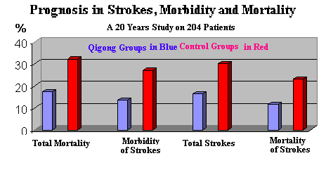

Twenty Years' Study of Qigong Group and Control Group on Strokes, Mortality, and Morbidity of Strokes
Translated and edited by Joe Hing Kwok Chu
| Two groups of patients (a) qigong group (blue) and (b) control group (red) |
 |
Source: Hypertension Clinic of Shanghai, Second People Hospital of Shanghai, Second People Medical School of Shanghai. Wang Cong Xin, Xu Ding Hai et al